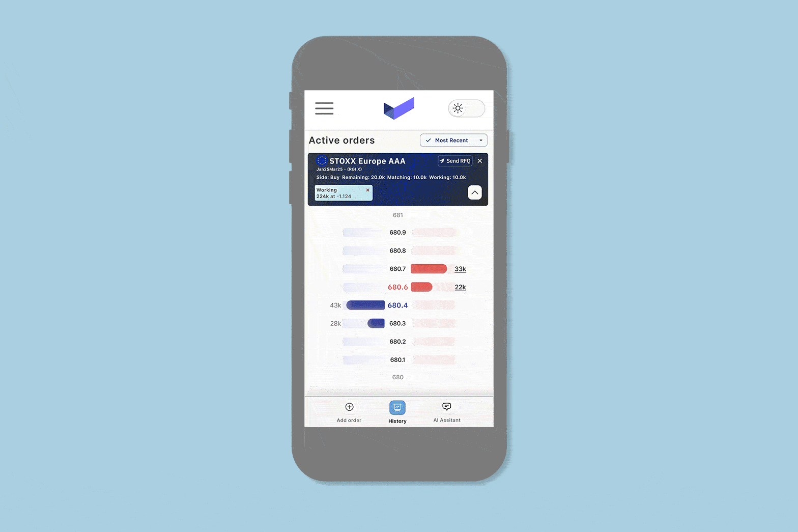
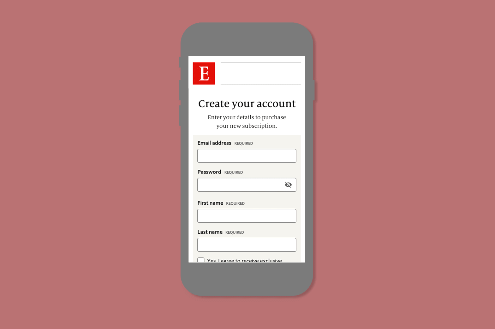

Intick: A new approach to futures trading
I’m still writing this case study, so please check back soon for the full story. I was the sole product designer leading design from 0 to 1 at a trading startup, shaping the platform and first design system.
UX
UI
Research
Discovery AI Integration
Reimagining Sedex: A Design System Approach
Sedex, one of the world's largest supply auditing platforms, was facing challenges with an underperforming platform...
UX
UI
Workshops
Discovery

Redefining The Economist subscription journey
I joined The Economist as part of a new dedicated future customer experience (FCX) team...
UX
UI
Research
Discovery